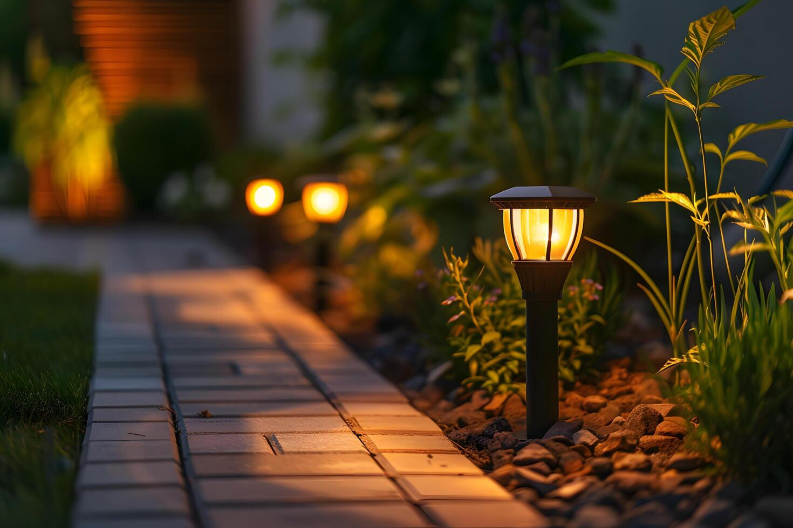
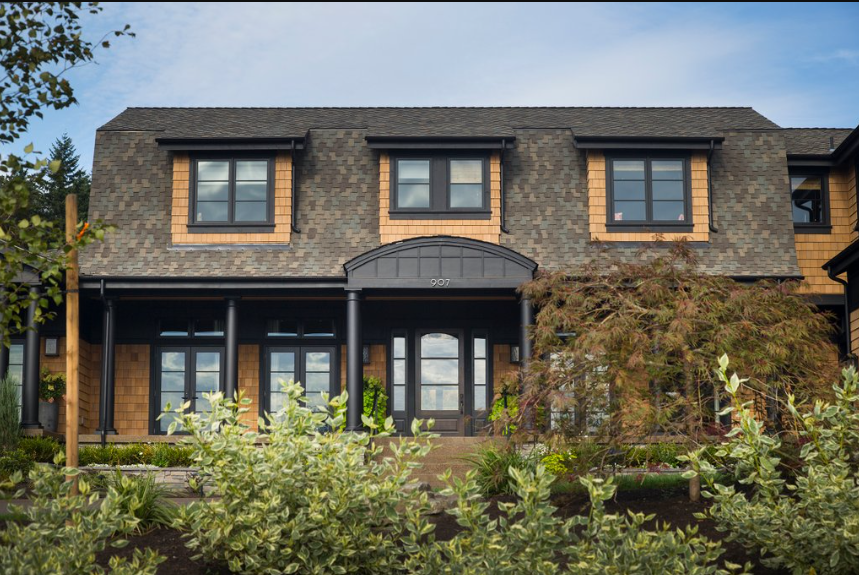

Smart Home is a modern residence that effectively combines new technology, comfort, and security.
This modern house is designed with the best features anyone can think of.
Its luxurious inside design is not the only thing that makes this smart home unique though.
You could also enjoy the tranquility of a beautiful landscape garden with an excellent
irrigation system. It is the perfect blend between sophisticated living and comfort.
Front Yard
The Smart House front yard was designed for the modern homeowner who values both aesthetics
and innovation. The front yard seamlessly blends technology with nature, offering an array of
features that enhance convenience, security, and environmental sustainability.
The yard boasts an intelligent irrigation system that adjusts watering schedules based on
weather forecasts and soil moisture levels, ensuring lush greenery while conserving
water. Low-maintenance, drought-resistant plants and automated outdoor lightning create
a beautiful, Eco-friendly landscape.

Pathway Lightning
Pathway lights illuminate the walkways with customizable colors and brightness levels.
Controlled via a smartphone app or voice commands, these lights can be set to guide guests,
enhance safety, or create a festive atmosphere.
Integrated Security System
A discreet, high-definition security camera system is intergrated into the design, providing
real-time monitoring and alerts for any unsual activity. Smart doorbells with video
capabilities allow you to see and interact with visitors from anywhere using your mobile device.
Smart Mailbox
Equipped with sensors and digital display, the smart mailbox notifies you when mail is delivered
and can even secure packages with a locking mechanism. Integrated with your smartphone,
it helps you keep track of deliveries and ensures the safety of your parcels.
Customizable Aesthetics
With a range of design options and settings, you can personalize the look of your front yard to
match your style. Whether you prefer a classic, modern, or whimsical design, the smart yard adapts
to your visions, all while offering the latest in technological innovation.

Front view
Elevate your home's curb appeal with the sleek and sophisticated front view of the cutting-edge
Smart House. Designed to make a lasting impression, this front view blends elegance and practicality.

Contemporary Architecture
This Smart Home showcases a striking modern facade with clean lines, large glass panels, and a
sophisticated aesthetic. The combination of natural materials like stone and wood with sleek
metal accents creates a visually stunning and timeless appearance.
Smart Entryway
A state-of-the-art, illuminated entryway features a smart door with bio-metric access and high-definition
video intercom system. Visitors are greeted by a friendly voice that you can personalize to reflect your
style and preferences.
Driveway and Entrance
The driveway features a smooth, durable surface with built-in LED markers and a sophisticated gate that
provides automated access. The entrance is framed by architectural elements that guide visitors
seamlessly to your doorstep.
Other Features

The yard is not the only thing that you will adore about this Smart Home. Safety and room-specific
technologies are designed to protect inhabitants and enhance their living environment. Smart Home
technology is designed to offer unparalleled convenience, making daily tasks easier and more efficient.